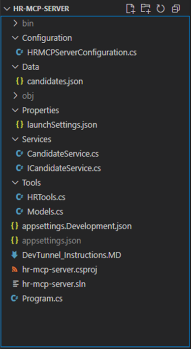
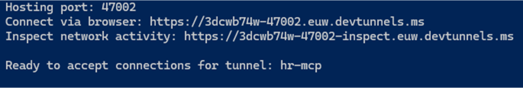
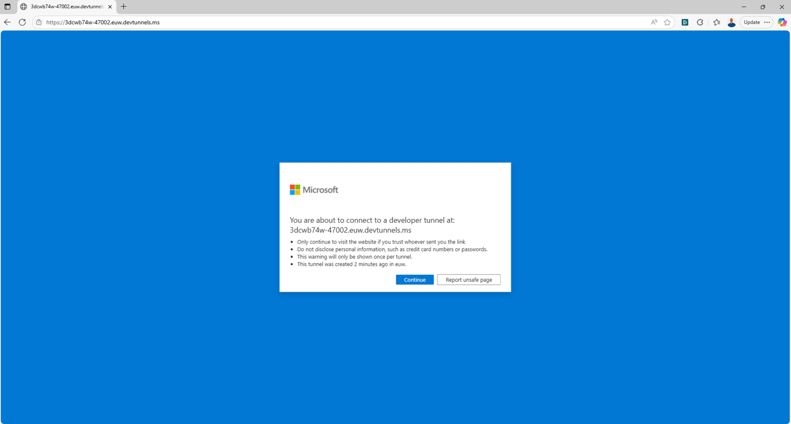
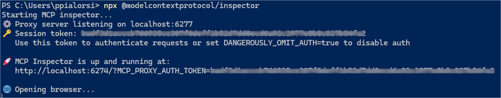
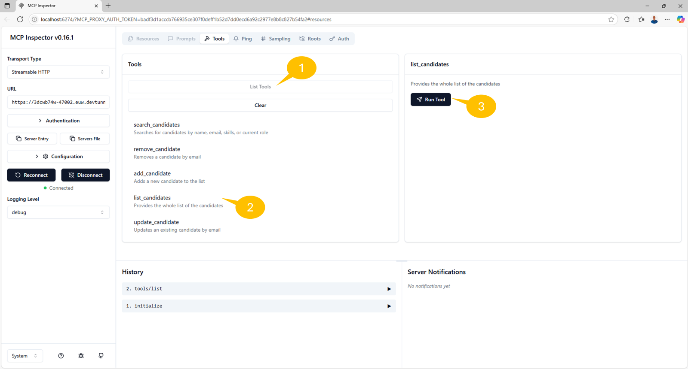
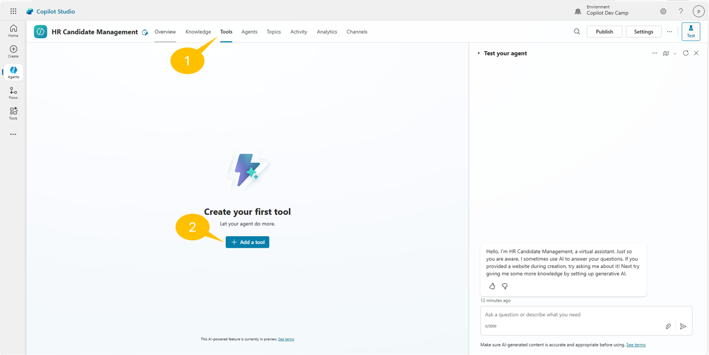
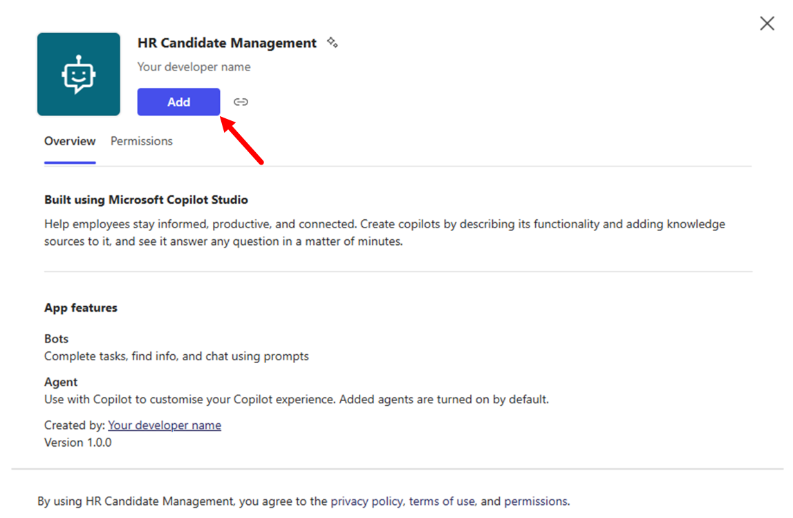
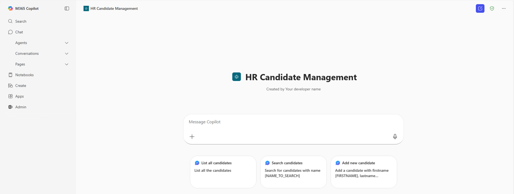

ラボ MCS6 - MCP サーバーの利用
このラボでは、Microsoft Copilot Studio で作成したエージェントを MCP (Model Context Protocol) サーバーで拡張する方法を学習します。具体的には、求人候補者のリストを管理するツールを提供する既存の MCP サーバーを利用します。MCP サーバーは次の機能を提供します。
- すべての候補者を一覧表示
- 条件で候補者を検索
- 新しい候補者を追加
- 既存候補者の情報を更新
- 候補者を削除
Microsoft Copilot Studio でエージェントを構築したい場合は、次のラボを実施してください
MCP について学ぶ
このラボでは MCP の概念を紹介し、Copilot Studio との統合方法を示します。MCP は AI アシスタントが外部データ ソースやツールへ安全に接続できる新しいプロトコルです。詳細は Model Context Protocol (MCP) for beginners のトレーニング コンテンツをご覧ください。
このラボで学習できること
- 既存の MCP サーバーを構成し接続する方法
- 外部サーバーの MCP ツールとリソースを利用する方法
- MCP サーバーを Copilot Studio エージェントと統合する方法
演習 1 : MCP サーバーのセットアップ
この演習では、人事候補者管理機能を提供するあらかじめ用意された MCP サーバーをセットアップします。サーバーは Microsoft .NET ベースで、C# 向け MCP SDK を使用しています。ここではサーバーをダウンロードし、ローカルで実行できるように構成します。
手順 1: MCP サーバーと前提条件の理解
このラボで使用する HR MCP サーバーは次のツールを提供します。
- list_candidates: 候補者の一覧を取得
- search_candidates: 名前、メール、スキル、現在の役職で候補者を検索
- add_candidate: 候補者を追加
- update_candidate: メールで既存候補者を更新
- remove_candidate: メールで候補者を削除
サーバーが管理する候補者情報
- 個人情報 (firstname, lastname, full name, email)
- 職務情報 (spoken languages, skills, current role)
開始前に次を用意してください。
手順 2: MCP サーバーのダウンロードと実行
このラボでは、用意された HR MCP サーバーを使用します。サーバー ファイルを こちら からダウンロードしてください。
zip を展開し、Visual Studio Code でフォルダーを開きます。サーバーは既に実装済みで、すぐに実行できます。

プロジェクト構成の主な要素
Configuration: サーバーの設定を定義するHRMCPServerConfiguration.csData: 候補者リストを提供するcandidates.jsonServices: 候補者リストを読み込み管理するICandidateService.csと実装CandidateService.csTools: MCP ツールを定義するHRTools.csとデータ モデルを定義するModels.csDevTunnel_Instructions.MD: dev tunnel で MCP サーバーを公開する手順Progam.cs: MCP サーバーを初期化するエントリーポイント
Visual Studio Code 内で新しいターミナルを開くか、通常のターミナルを開き、次のコマンドで依存関係のインストール、ビルド、起動を行います。
dotnet run
MCP サーバーが起動していることを確認します。ブラウザーで http://localhost:47002/ にアクセスできるはずです。JSON 形式のエラーが表示されても問題ありません。MCP サーバーに到達できていることを示しています。
Info
このラボ提供の HR MCP サーバーは本番運用を想定したものではありません。候補者リストをメモリ上で保持し、複数の会話セッションをまたいでデータを保持しません。本ラボ用にシンプルかつわかりやすいサンプルとして作成されています。プロフェッショナル開発者の方は、HTTP で公開する MCP サーバー構築の基礎を学ぶ出発点としてご利用ください。必要に応じてコンテナー アプリ化や永続ストレージ追加で改良できます。たとえば こちら では Fabian Williams (Microsoft) が実装したより高度なバージョンを参照できます。
手順 3: dev tunnel の構成
次に、MCP サーバーをパブリック URL で公開します。ローカル開発マシンでサーバーを実行しているため、localhost をパブリック URL にマッピングするリバース プロキシが必要です。ここでは Microsoft 提供の dev tunnel を使用します。
- こちらの手順 に従って dev tunnel をインストール
- 次のコマンドで dev tunnel にログイン
devtunnel user login
- 次のコマンドで dev tunnel をホスト
devtunnel create hr-mcp -a --host-header unchanged
devtunnel port create hr-mcp -p 47002
devtunnel host hr-mcp
コマンド ラインに接続情報が表示されます。

「Connect via browser」URL をコピーしておきます。ブラウザーでその URL にアクセスすると、以下のような確認ページが表示される場合があります。

このラボの演習中は dev tunnel と MCP サーバーを起動したままにしてください。再起動が必要な場合は devtunnel host hr-mcp を再実行します。
手順 4: MCP サーバーのテスト
ローカル環境で MCP サーバーをテストします。簡単のため MCP Inspector を使用します。ターミナルを開き、次のコマンドを実行します。
npx @modelcontextprotocol/inspector
Node.js が MCP Inspector をダウンロードして実行し、次のような出力が表示されます。

ブラウザーが自動で起動し、次のインターフェースが表示されます。

MCP Inspector を次の設定で構成します。
- 1️⃣ Transport type: Streamable HTTP
- 2️⃣ URL: dev tunnel の「Connect via browser」でコピーした URL
続いて 3️⃣ Connect を選択して MCP サーバーに接続します。緑色のアイコンと Connected メッセージが表示されれば成功です。
画面の Tools セクションで 1️⃣ List Tools を選択して MCP サーバーが公開しているツール一覧を取得します。
次に 2️⃣ list_candidates ツールを選択し、3️⃣ Run tool でツールを実行します。

成功すると Success メッセージとツールの出力が表示されます。
History セクションでは過去の呼び出し履歴を確認できます。

これで Microsoft Copilot Studio のエージェントから MCP サーバーを利用する準備が整いました。
演習 2 : Copilot Studio で新しいエージェントを作成
この演習では、演習 1 で構成した MCP サーバーを利用する新しいエージェントを Microsoft Copilot Studio で作成します。
手順 1: 新しいエージェントの作成
ブラウザーを開き、対象の Microsoft 365 テナントの作業アカウントで https://copilotstudio.microsoft.com にアクセスします。
左ナビゲーション メニューで Copilot Dev Camp 環境を選択し、Create → Agent を選択して新しいエージェントを作成します。
Skip to configure を選択し、以下の設定でエージェントを定義します。
- Name:
HR Agent with MCP
- Description:
An AI assistant that helps manage HR candidates using MCP server integration
for comprehensive candidate management
- Instructions:
You are a helpful HR assistant that specializes in candidate management. You can help users search
for candidates, check their availability, get detailed candidate information, and add new
candidates to the system.
Always provide clear and helpful information about candidates, including their skills, experience,
contact details, and availability status.

Create を選択してエージェントを作成します。
手順 2: エージェントの会話スターターを構成
エージェント作成後、設定ページが表示されます。Suggested prompts セクションで次のプロンプトを追加します。
- Title:
List all candidates- Prompt:List all the candidates - Title:
Search candidates- Prompt:Search for candidates with name [NAME_TO_SEARCH] - Title:
Add new candidate- Prompt:Add a candidate with firstname [FIRSTNAME], lastname [LASTNAME], e-mail [EMAIL], role [ROLE], spoken languages [LANGUAGES], and skills [SKILLS]

Save を選択して変更を保存します。
演習 3 : MCP サーバーと Copilot Studio の統合
この演習では、MCP サーバーと Copilot Studio エージェントの統合を構成します。
手順 1: MCP サーバーが公開するツールの追加
エージェントで 1️⃣ Tools セクションに移動し、2️⃣ + Add a tool を選択します。

1️⃣ Model Context Protocol グループを選択して利用可能な MCP サーバー一覧を表示します。続いて 2️⃣ + New tool を選択し、HR MCP サーバーを追加します。

表示されるダイアログでツールの種類を選択します。Model Context Protocol を選ぶと、公式ドキュメント Extend your agent with Model Context Protocol に移動しますが、このラボでは実際に Power Platform のカスタム コネクタを作成します。
Custom connector を選択して進めます。

新しいブラウザー タブで Power Apps のカスタム コネクタ管理ページが開きます。1️⃣ + New custom connector → 2️⃣ Import an OpenAPI file を選択します。

この作業を保留し、Visual Studio Code に戻って新しいファイルを作成し、次の YAML スキーマを貼り付けます。
swagger: '2.0'
info:
title: HR MCP Server
description: Allows to manage candidates for specific job roles providing tools to list, search, add, update, and remove candidates from a reference list
version: 1.0.0
host: [Connect via browser host name of your dev tunnel]
basePath: /
schemes:
- https
paths:
/:
post:
summary: HR MCP Server
x-ms-agentic-protocol: mcp-streamable-1.0
operationId: InvokeMCP
responses:
'200':
description: Success
host を dev tunnel のホスト名に置き換えます。
https:// や末尾の / は含めず、例: 3dcwb74w-47002.euw.devtunnels.ms のみを設定します。ファイルを保存し、ブラウザーに戻ります。
コネクタ名を HR MCP Server など任意で入力し、Import を選択して先ほどの OpenAPI ファイルを選択します。ファイルを選択後 Continue をクリックします。

コネクタの設定ページで Swagger editor を有効にして OpenAPI のソースを表示し、内容を確認します。

Create connector を選択して作成が完了するまで待ちます。必要ならコネクタ用アイコンも設定できます。たとえば こちらのアイコン をダウンロードして設定し、Update connector で保存します。
Copilot Studio に戻り、Refresh を選択してツール一覧を更新します。
Model Context Protocol リストに HR MCP Server が表示されるはずです。
HR MCP Server コネクタを選択し、Copilot Studio の既定の接続 UX でサーバーに接続します。接続後 Add and configure を選択します。

MCP サーバーが公開するすべてのツールがエージェントで利用可能になりました。

手順 2: MCP サーバー統合のテスト
右上の Publish を選択してエージェントを公開します。公開後、統合テスト パネルで次のプロンプトを使用します。
List all candidates
エージェントは MCP サーバーの list_candidates ツールを使用して候補者一覧を返すはずです。
ただし一覧を取得するにはコネクタへの接続が必要なため、Copilot Studio から Open connection manager が求められます。接続後 Retry を選択します。

接続が完了すると候補者一覧が取得できます。

ローカルでの MCP サーバー デバッグ
開発者の方は HRTools.cs にブレークポイントを設定し、Visual Studio Code でデバッガーをアタッチして MCP サーバーの動作を詳細に確認できます。
エージェントを Microsoft 365 Copilot Chat でも利用可能にできます。1️⃣ Channels → 2️⃣ Teams and Microsoft 365 Copilot を開き、3️⃣ Make agent available in Microsoft 365 Copilot をチェックし、4️⃣ Add channel を選択します。チャネルが有効化されたらパネルを閉じ、再度 Publish してください。

再度 Teams and Microsoft 365 Copilot チャネルを開き、See agent in Microsoft 365 を選択してエージェントを Microsoft 365 Copilot に追加します。

エージェント追加画面で Add → Open を選択し、Microsoft 365 Copilot でエージェントを試します。
エージェントの詳細
Teams and Microsoft 365 Copilot チャネル設定パネルで、説明やカスタム アイコンなど追加情報を設定できます。

Microsoft 365 Copilot でエージェントの UI に提案プロンプトが表示されます。たとえば次のプロンプトを試してください。
Search for candidate Alice

エージェントは MCP サーバーの search_candidates ツールを使用し、該当候補者のみを返します。ただし Microsoft 365 Copilot でもコネクタ接続が必要なため、再度接続マネージャーで接続を行います。

接続後、再度プロンプトを実行すると期待通りの結果が得られます。

次に add_candidate ツールを使い、新しい候補者を追加してみましょう。次のプロンプトを使用します。
Add a new candidate: John Smith, Software Engineer, skills: React, Node.js,
email: john.smith@email.com, speaks English and Spanish
エージェントは意図を理解し、add_candidate ツールに必要な入力パラメーターを抽出して実行します。サーバーからは確認メッセージが返されます。

もう一度候補者一覧を表示すると John Smith が追加されていることを確認できます。

他にも次のようなプロンプトで試してみてください。
Update the candidate with email bob.brown@example.com to speak also French
または
Add skill "Project Management" to candidate bob.brown@example.com
または
Remove candidate bob.brown@example.com
エージェントは適切なツールを呼び出し、プロンプトに従って動作します。
お疲れさまでした！ エージェントは完全に機能し、HR MCP サーバーが公開するすべてのツールを利用できます。
おめでとうございます！
これでラボ MCS6 - MCP サーバーの利用 を完了しました！